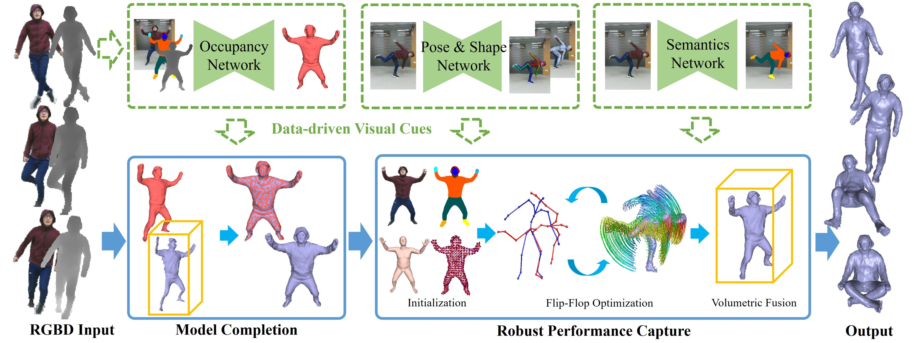
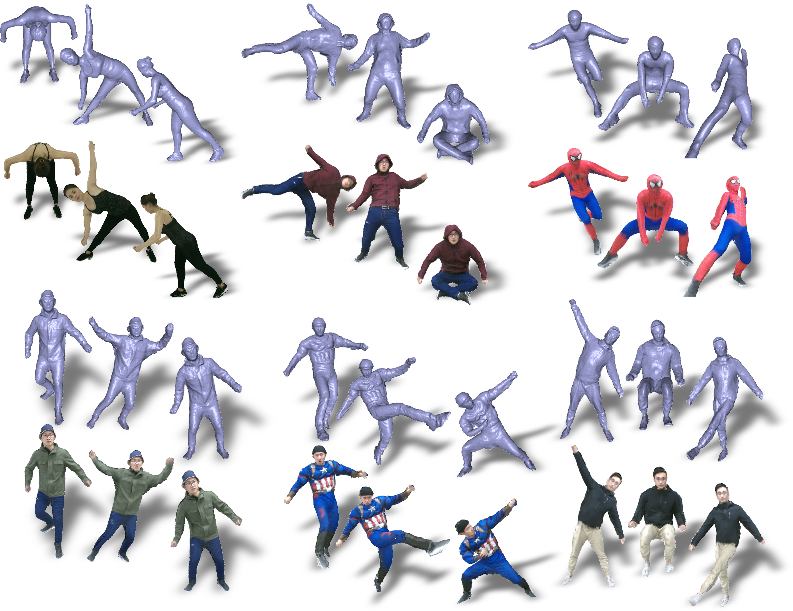

High-quality and complete 4D reconstruction of human activities is critical for immersive VR/AR experience, but it suffers from inherent self-scanning constraint and consequent fragile tracking under the monocular setting. In this paper, inspired by the huge potential of learning-based human modeling, we propose RobustFusion, a robust human performance capture system combined with various data-driven visual cues using a single RGBD camera. To break the orchestrated self-scanning constraint, we propose a data-driven model completion scheme to generate a complete and fine-detailed initial model using only the front-view input. To enable robust tracking, we embrace both the initial model and the various visual cues into a novel performance capture scheme with hybrid motion optimization and semantic volumetric fusion, which can successfully capture challenging human motions under the monocular setting without pre-scanned detailed template and owns the re-initialization ability to recover from tracking failures and the disappear-reoccur scenarios. Extensive experiments demonstrate the robustness of our approach to achieve high-quality 4D reconstruction for challenging human motions, liberating the cumbersome self-scanning constraint.
|  |
|---|
Fig. 1 Pipeline of RobustFusion.
|  |
|---|
Fig.2 Example results reconstructed by RobustFusion.